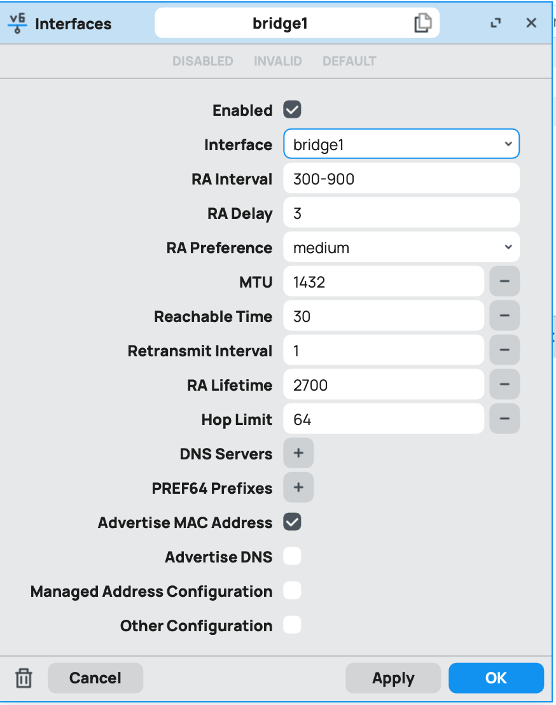

ipv6最终配置定型：
/ipv6 dhcp-client
add comment="defconf: local DHCPv6 Client" interface=pppoe-out1 pool-name=dhcpv6-gua-pool1 pool-prefix-length=62 request=prefix use-peer-dns=no
/ipv6 address
add address=::1 comment="defconf: local LAN GUA IPv6 address" from-pool=dhcpv6-gua-pool1 interface=pppoe-out1
add address=fd88::1111 comment="defconf: local LAN ULA IPv6 address" from-pool=DHCPv6 interface=bridge1
/ipv6 pool
add name=DHCPv6 prefix=fd88::/64 prefix-length=64
/routing table add name=Proxy-V6 fib
/ipv6 firewall mangle add chain=prerouting dst-address-list=proxy_ipv6 action=mark-routing new-routing-mark=Proxy-V6
/ipv6 route add dst-address=::/0 gateway=fd88::9999 routing-table=Proxy-V6
/routing rule/add action=lookup-only-in-table comment="for ipv6 mangle effective in route" disabled=no routing-mark=Proxy-V6 table=Proxy-V6
/ipv6 firewall nat
add action=masquerade chain=srcnat src-address=fd88::/64
/ipv6 firewall address-list
add address=f2b0::/18 list=proxy_ipv6
add address=2001:b28:f23d::/48 list=proxy_ipv6
add address=2001:b28:f23f::/48 list=proxy_ipv6
add address=2001:67c:4e8::/48 list=proxy_ipv6
add address=2001:b28:f23c::/48 list=proxy_ipv6
add address=2a0a:f280::/32 list=proxy_ipv6
/ipv6 firewall filter
add action=accept chain=input connection-state=established,related,untracked
add action=drop chain=input connection-state=invalid
add action=accept chain=forward connection-state=\
established,related,untracked
add action=accept chain=forward src-address=fd88::/64
add action=drop chain=forward comment="defconf: drop invalid" \
connection-state=invalid
add action=accept chain=forward comment="Accept ICMPv6" protocol=icmpv6
add action=accept chain=input comment="Accept ICMPv6" protocol=icmpv6
add action=accept chain=input dst-port=546 protocol=udp src-address=fe80::/10
add action=accept chain=forward dst-port=546 protocol=udp src-address=fe80::/10
add action=drop chain=input comment="Drop malformed packet" protocol=tcp \
tcp-flags=fin,!syn,!rst,!ack
add action=drop chain=input comment="Drop TCP scan" protocol=tcp tcp-flags=\
fin,syn
add action=drop chain=input comment="Drop TCP syn/rst scan" protocol=tcp \
tcp-flags=syn,rst
add action=drop chain=input comment="Drop TCP fin/rst scan" protocol=tcp \
tcp-flags=fin,rst
add action=drop chain=input connection-state=new in-interface=!bridge1
add action=drop chain=input comment="Drop all other input traffic" \
in-interface=pppoe-out1
/ipv6 firewall mangle
add action=change-mss chain=forward comment="defconf: fix IPv6 mss for WAN" new-mss=clamp-to-pmtu passthrough=yes protocol=tcp tcp-flags=syn
### ipv4的端口转发
/ip firewall nat
add action=dst-nat chain=dstnat comment="synapse prot" dst-port=12335 \ protocol=tcp to-addresses=10.20.20.8 to-ports=12335
add action=dst-nat chain=dstnat comment="gohome prot" dst-port=10521 \ protocol=udp to-addresses=10.20.20.8 to-ports=10521
/ip/firewall/nat
add action=dst-nat chain=dstnat comment="SoftEther VPN - L2TP" dst-port=1701 protocol=udp to-addresses=10.20.20.4 to-ports=1701
add action=dst-nat chain=dstnat comment="SoftEther VPN - L2TP" dst-port=500 protocol=udp to-addresses=10.20.20.4 to-ports=500
add action=dst-nat chain=dstnat comment="SoftEther VPN - L2TP" dst-port=4500 protocol=udp to-addresses=10.20.20.4 to-ports=4500
#ND 原有的禁掉，新建一个默认接口改为桥即可！主要是接口改为桥（原Nd禁用，新建一个）具体如下图：
/ipv6 nd prefix default
set preferred-lifetime=4h valid-lifetime=24h
/ipv6 settings
set max-neighbor-entries=16384
参数含义
• max-neighbor-entries：IPv6 邻居表中允许的最大条目数量。
• 如果邻居表满了，新的邻居条目将无法添加，可能导致网络中的部分设备无法通信。
• 条目包括本地链路上的所有设备，如客户端设备、其他路由器等。
家用网络的合理设置
1. 网络规模参考
• 小型家庭网络（1-10 台设备）：
推荐值：128 或更少（默认是 512）。
• 中型家庭网络（10-50 台设备）：
推荐值：512 至 1024。
• 有智能设备的家庭网络（50+ 台设备）：
推荐值：2048。
• 大型网络（100 台设备或更多）：
可根据需要提高到 4096 或更高。
#开启nat1
/ip firewall nat add action=endpoint-independent-nat chain=srcnat protocol=udp out-interface=pppoe-out1 place-before=0
/ip firewall nat add action=endpoint-independent-nat chain=dstnat protocol=udp in-interface=pppoe-out1 place-before=0

附：简易有效防火墙（R大提供的方案）
ipv4
/ip firewall filter
add action=accept chain=forward in-interface=bridge1
add action=accept chain=input in-interface=bridge1
add action=accept chain=input connection-state=established,related
add action=drop chain=input connection-state=invalid in-interface=pppoe-out1
add action=drop chain=input in-interface=pppoe-out1 protocol=icmp
ipv6
/ipv6 firewall filter
add action=accept chain=input comment="Accept established, related, untracked" connection-state=established,related,untracked
add action=accept chain=forward comment="Accept established, related, untracked" connection-state=established,related,untracked
add action=accept chain=forward comment="Accept ICMPv6" protocol=icmpv6
add action=accept chain=input comment="Accept ICMPv6" protocol=icmpv6
add action=drop chain=input comment="Drop invalid" connection-state=invalid
add action=drop chain=forward comment="Drop invalid" connection-state=invalid
add action=drop chain=forward comment="Drop all not from LAN" disabled=yes in-interface=!bridge